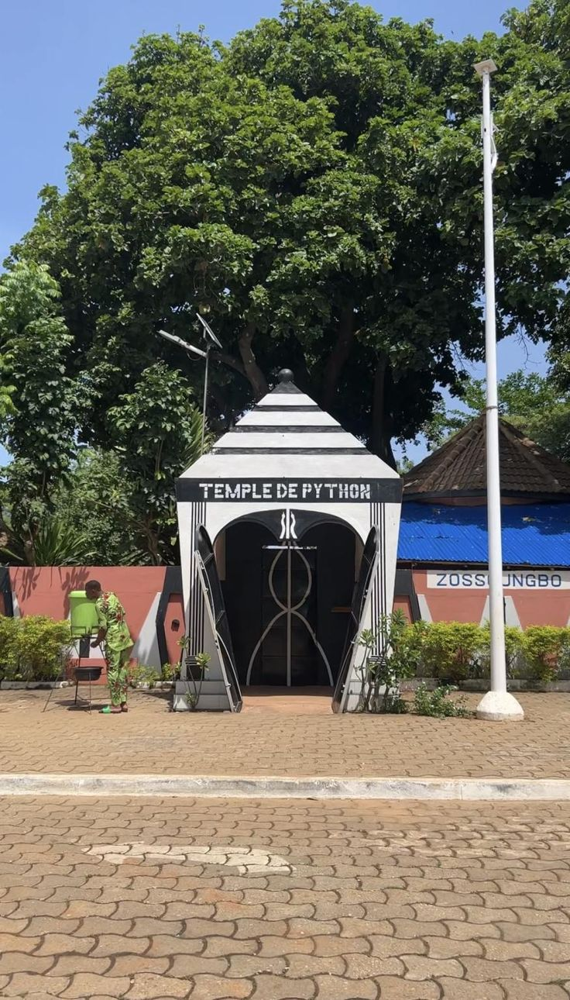

Sites historiques et attractions
Un pays, mille histoires, mille merveilles.
Laissez-vous charmer par la magie des palais royaux d’Abomey,
par l’émotion du port de non-retour à Ouidah, ou par la beauté
sauvage de la Pendjari. Le Bénin, c’est l’Afrique authentique,
vibrante et accueillante. Chaque site est une aventure, chaque
lieu un souvenir.
Partez à la découverte des lieux emblématiques et de l’histoire locale.

